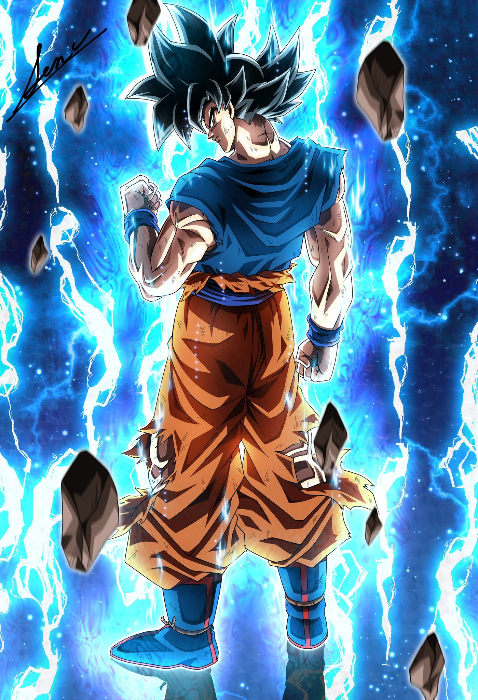
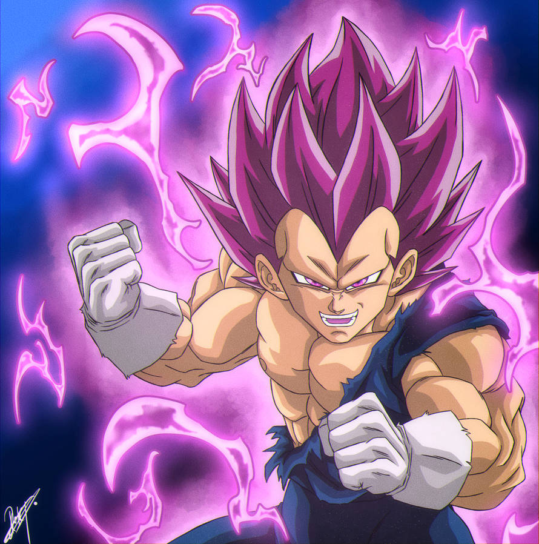

Goku
El Legendario Super Sayayin
Cuenta con el ultra instinto, y su conocimiento en artes marciales y habilidades como el kamehameha y la genkidama lo hacen de temer.
Vegeta
El príncipe de los sayayins
Cuenta con el ultra ego, además de ser del tipo de peleador que juega con sus oponentes, nunca se deja confiar, lo que hace que sea impredecible y tiene el uso del poderoso hakai.
